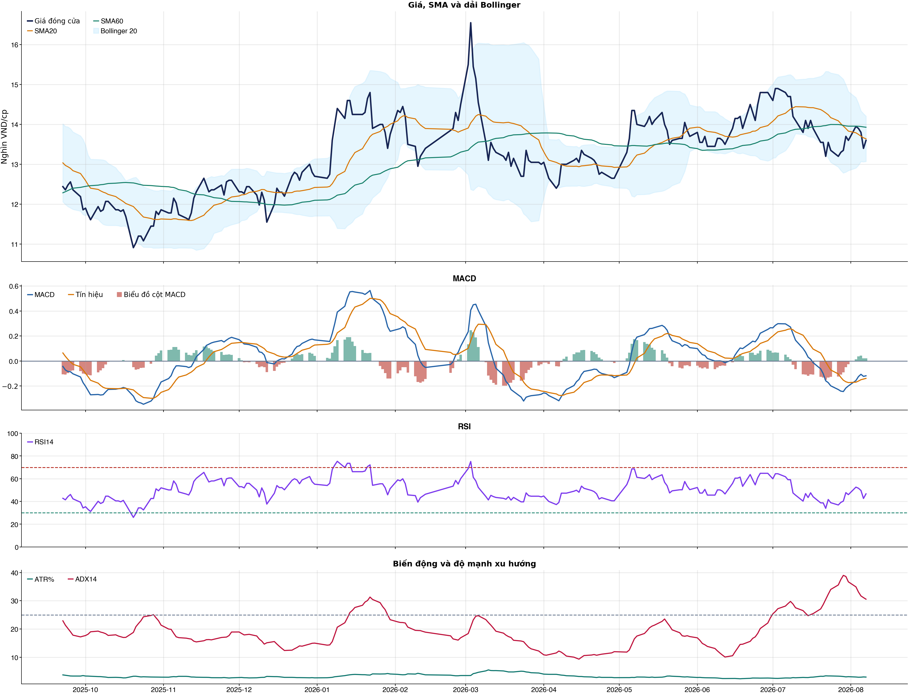
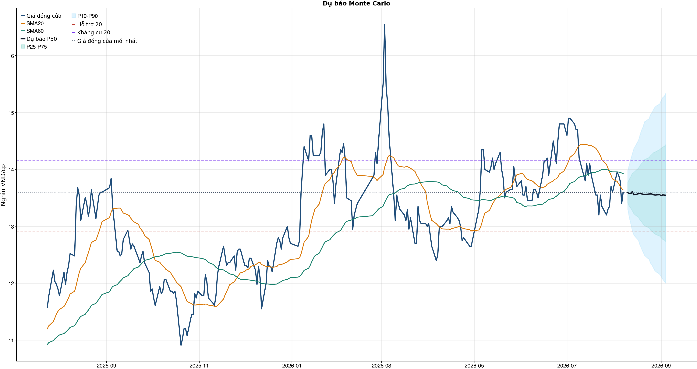
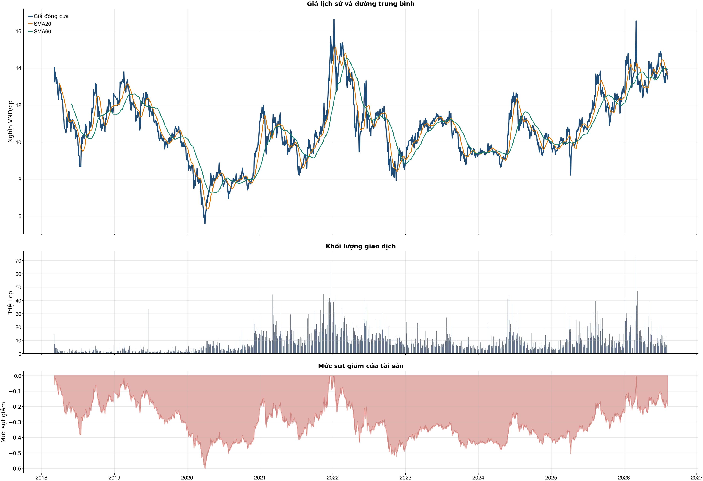

Kết quả chính
Tổng quan cơ bản
Biểu đồ kỹ thuật

Tín hiệu kỹ thuật
| Xu hướng | Cẩn thận | Giá nằm dưới SMA60. |
| MACD | Tích cực | MACD trên signal, histogram dương. |
| RSI14 | Trung tính | RSI 46.7. |
| Bollinger | Ổn định | Giá nằm trong dải Bollinger. |
| ADX | Xu hướng giảm | ADX 30.6, -DI vượt +DI. |
| Thanh khoản | Bình thường | 0.89 lần trung bình. |
| Stochastic | Yếu lại | %K nằm dưới %D. |
So sánh mô hình
| XGBoost | 0.530 | AUC 0.587 |
| Logistic | 0.543 | AUC 0.552 |
| Đa số | 0.500 | Mốc so sánh |
Kiểm thử chiến lược ngoài mẫu sau chi phí
| Lợi nhuận ròng | -35.8% | 652 quan sát ngoài mẫu |
| Sharpe | -1.42 | Sau chi phí |
| Mức sụt giảm tối đa | -43.2% | 93 vòng giao dịch |
| Chi phí giả định | 50.0 bps | Một vòng mua và bán |
Mức độ quan trọng của đặc trưng
| return_1d | 10.55 | Mức đóng góp |
| stoch_k_14 | 9.44 | Mức đóng góp |
| close_vs_sma20 | 8.97 | Mức đóng góp |
| return_20d | 8.74 | Mức đóng góp |
| macd_hist_pct | 8.52 | Mức đóng góp |
| atr_pct_14 | 8.46 | Mức đóng góp |
| return_10d | 8.43 | Mức đóng góp |
| adx_14 | 8.38 | Mức đóng góp |
Điều kiện phát hành tín hiệu
| AUC của mô hình | ĐẠT | Điều kiện phát hành tín hiệu |
| Độ chính xác cân bằng của mô hình | ĐẠT | Điều kiện phát hành tín hiệu |
| XGBoost vượt mô hình Logistic đối chứng | ĐẠT | Điều kiện phát hành tín hiệu |
| Xác suất tăng đạt ngưỡng | KHÔNG ĐẠT | Điều kiện phát hành tín hiệu |
| Bối cảnh kỹ thuật đạt ngưỡng | KHÔNG ĐẠT | Điều kiện phát hành tín hiệu |
| Tỷ lệ lợi nhuận/rủi ro đạt ngưỡng | ĐẠT | Điều kiện phát hành tín hiệu |
| Dữ liệu còn mới | ĐẠT | Điều kiện phát hành tín hiệu |
| Có khối lượng vị thế hợp lệ | ĐẠT | Điều kiện phát hành tín hiệu |
| Có kết quả kiểm thử chiến lược ngoài mẫu | ĐẠT | Điều kiện phát hành tín hiệu |
| Mẫu kiểm thử chiến lược đủ lớn | ĐẠT | Điều kiện phát hành tín hiệu |
| Kiểm thử chiến lược có lợi thế ròng | KHÔNG ĐẠT | Điều kiện phát hành tín hiệu |
Quản trị rủi ro
| Rủi ro/lệnh | 1.0% | 1,000,000 VND |
| Mức dừng lỗ | 12.99 | Rủi ro mỗi cổ phiếu 0.68 |
| Mục tiêu 1 | 15.34 | Lợi nhuận/rủi ro 2.47 |
| Mục tiêu 2 | 15.34 | Dự báo/kháng cự |
Phân tích cơ bản
| P/E | 6.48 | 2026-Q2 |
| P/B | 1.01 | 2026-Q2 |
| P/S | 0.84 | 2026-Q2 |
| ROE | 16.5% | 2026-Q2 |
| ROA | 6.5% | 2026-Q2 |
| Gross margin | 18.3% | 2026-Q2 |
| Net margin | 13.7% | 2026-Q2 |
| Debt/Equity | 1.38 | 2026-Q2 |
| Current ratio | 1.37 | 2026-Q2 |
| NPL | 0.0% | 2026-Q2 |
| Dividend yield | 0.0% | 2026-Q2 |
| Market cap | 41,722.7 tỷ | 2026-Q2 |
| Revenue Growth | 116.1% | 2026-Q2 YoY |
| Profit Growth | 484.1% | 2026-Q2 YoY |
| Dòng tiền từ HĐKD | 1,800.6 tỷ | 2026-Q2 |
| CAPEX | -23.2 tỷ | 2026-Q2 |
| Lợi nhuận sau thuế | 3,707.7 tỷ | 2026-Q2 |
| Lợi nhuận hoạt động | 4,150.4 tỷ | 2026-Q2 |
| Chi phí lãi vay | -517.8 tỷ | 2026-Q2 |
| Tiền và tương đương tiền | 9,834.1 tỷ | 2026-Q2 |
| Vay ngắn hạn | 18,962.4 tỷ | 2026-Q2 |
| Vay dài hạn | 19,126.6 tỷ | 2026-Q2 |
| Tổng tài sản | 106,355.4 tỷ | 2026-Q2 |
| Tổng nợ phải trả | 61,691.5 tỷ | 2026-Q2 |
| Vốn chủ sở hữu | 44,663.9 tỷ | 2026-Q2 |
| Khoản phải thu | 25,246.7 tỷ | 2026-Q2 |
| Hàng tồn kho | 2,676.9 tỷ | 2026-Q2 |
| Dòng tiền tự do (CFO - CAPEX) | 1,777.5 tỷ | 2026-Q2 |
| CFO / Lợi nhuận sau thuế | 0.49 | 2026-Q2 |
| Nợ vay ròng | 28,254.9 tỷ | 2026-Q2 |
| Nợ vay / Vốn chủ sở hữu | 0.85 | 2026-Q2 |
| Phải thu / Tổng tài sản | 23.7% | 2026-Q2 |
| Khả năng trả lãi (EBIT / lãi vay) | 8.02 | 2026-Q2 |
Tin tức doanh nghiệp
| Trạng thái | Có dữ liệu | research_only |
| Nguồn / số bài | VCI | 50 |
| Bài đủ timestamp | 50 | Chỉ các bài này mới được phép dùng point-in-time |
| Sentiment 5 ngày | 0.00 | 0.0 bài trước cutoff |
| Phương pháp | keyword_heuristic_v1 | Research only; chưa dùng làm tín hiệu mua/bán |
Dự báo ngắn hạn
| 2026-08-10 | 13.59 | P10 13.30 / P90 13.98 |
| 2026-08-11 | 13.58 | P10 13.15 / P90 14.09 |
| 2026-08-12 | 13.57 | P10 13.04 / P90 14.18 |
| 2026-08-13 | 13.61 | P10 12.92 / P90 14.28 |
| 2026-08-14 | 13.55 | P10 12.85 / P90 14.37 |
| 2026-08-17 | 13.57 | P10 12.76 / P90 14.51 |
| 2026-08-18 | 13.58 | P10 12.67 / P90 14.60 |
| 2026-08-19 | 13.57 | P10 12.61 / P90 14.69 |
Biểu đồ dự báo

Lịch sử giá và mức sụt giảm

Báo cáo dùng để học tập và lập kịch bản, không phải khuyến nghị mua/bán.
Phân tích AI có kiểm chứng
Trạng thái quyết định: NO_EDGE
Tóm tắt: ML decision hiện giữ nguyên NO_EDGE. News Reader đã trích đoạn có nguồn của 5 bài để phân loại chủ đề (ket_qua_kinh_doanh: 4, co_tuc_va_hanh_dong_doanh_nghiep: 3, vi_mo: 4, nganh: 3, rui_ro: 2), nhưng các trích đoạn này không tạo bằng chứng mới cho quyết định đầu tư.
Kỹ thuật: Artifact kỹ thuật: bias Suy yếu / cẩn thận; điểm -2. Chi tiết artifact: Xu hướng: Cẩn thận (Giá nằm dưới SMA60.); MACD: Tích cực (MACD trên signal, histogram dương.); RSI14: Trung tính (RSI 46.7.); Bollinger: Ổn định (Giá nằm trong dải Bollinger.); ADX: Xu hướng giảm (ADX 30.6, -DI vượt +DI.); Thanh khoản: Bình thường (0.89 lần trung bình.); Stochastic: Yếu lại (%K nằm dưới %D.)
Cơ bản: Artifact cơ bản: Điện lực Dầu khí Việt Nam; kỳ 2026-Q2; P/E 6.48; P/B 1.01; ROE 16.5%; ROA 6.5%; Debt/Equity 1.38; Revenue Growth 116.1%; Profit Growth 484.1%.
Tin tức: Đã đọc trích đoạn giới hạn của 5 bài; phân nhóm rule-based: ket_qua_kinh_doanh: 4, co_tuc_va_hanh_dong_doanh_nghiep: 3, vi_mo: 4, nganh: 3, rui_ro: 2. Tác động cần kiểm chứng: Đối chiếu doanh thu/lợi nhuận trong bài với BCTC và kỳ vọng thị trường. Kiểm tra ngày GDKHQ, tỷ lệ, nguồn chi trả và nguy cơ pha loãng trước khi đánh giá tác động. Đối chiếu thời điểm công bố và kênh tác động lãi suất/tỷ giá với mô hình kinh doanh. So sánh tín hiệu ngành với thị phần, nhu cầu và đối thủ trước khi suy luận cho riêng doanh nghiệp. Xác minh công bố chính thức, phạm vi ảnh hưởng và khả năng định lượng rủi ro. Đây không phải sentiment hay dự báo tác động giá.
Live research: Live snapshot lấy lúc 2026-08-09T08:36:15.422997+00:00; News Reader đọc được 5 bài. ML có 3 lý do guard và vẫn là NO_EDGE. Không dùng tin live để train/backtest.
Rủi ro cần kiểm chứng
- ML guard: Probability 47.7% < 55.0%
- ML guard: Technical score -2 < 2
- ML guard: Lợi thế OOS ròng không đạt: return=-0.3577952299999997, Sharpe=-1.4170100539659634
- News Reader: Đối chiếu doanh thu/lợi nhuận trong bài với BCTC và kỳ vọng thị trường.
- News Reader: Kiểm tra ngày GDKHQ, tỷ lệ, nguồn chi trả và nguy cơ pha loãng trước khi đánh giá tác động.
- News Reader: Đối chiếu thời điểm công bố và kênh tác động lãi suất/tỷ giá với mô hình kinh doanh.
- News Reader: So sánh tín hiệu ngành với thị phần, nhu cầu và đối thủ trước khi suy luận cho riêng doanh nghiệp.
- News Reader: Xác minh công bố chính thức, phạm vi ảnh hưởng và khả năng định lượng rủi ro.
- Chỉ lưu trích đoạn giới hạn để kiểm chứng nguồn; không lưu hay hiển thị toàn văn bài báo.
- Phân nhóm là keyword rule-based để định tuyến research, không phải sentiment hay dự báo tác động giá.
- Dữ liệu News Reader chỉ phục vụ research/report; không dùng làm feature train/backtest khi chưa có lịch sử available_at point-in-time.
- Tin live/trích đoạn cần mở URL gốc để kiểm chứng bối cảnh, số liệu và thời điểm trước khi sử dụng.
Bằng chứng
- ML decision artifact: NO_EDGE. Probability 47.7% < 55.0%
- ML decision artifact: NO_EDGE. Technical score -2 < 2
- ML decision artifact: NO_EDGE. Lợi thế OOS ròng không đạt: return=-0.3577952299999997, Sharpe=-1.4170100539659634
- News Reader [bnews.vn]: Chứng khoán hôm nay: Khuyến nghị mua DMX, POW và chờ mua VCB - bnews.vn | nhóm: ket_qua_kinh_doanh, co_tuc_va_hanh_dong_doanh_nghiep, vi_mo, nganh (2026-08-07T01:19:00+00:00)
- News Reader [nguoiquansat.vn]: Cổ phiếu đáng chú ý ngày 7/8: DMX, POW, VCB - nguoiquansat.vn | nhóm: ket_qua_kinh_doanh, co_tuc_va_hanh_dong_doanh_nghiep, vi_mo, nganh (2026-08-06T16:40:01+00:00)
- News Reader [vov.vn]: Một số cổ phiếu cần quan tâm 3/8: Cơ hội đầu tư tiềm năng với ACB và POW - vov.vn | nhóm: ket_qua_kinh_doanh, co_tuc_va_hanh_dong_doanh_nghiep, vi_mo, nganh, rui_ro (2026-08-02T22:00:00+00:00)
- News Reader [CafeBiz]: PV Power (POW) lập kỷ lục lợi nhuận, nắm hơn 1 tỷ USD tiền và tiền gửi nhưng vẫn tăng vay hàng chục nghìn tỷ đồng - CafeBiz | nhóm: ket_qua_kinh_doanh, vi_mo (2026-08-05T13:22:00+00:00)
- News Reader [nguoiquansat.vn]: 5 cổ phiếu hot LPB, ACB, HCM, POW và VNM dưới góc nhìn phân tích kỹ thuật: Mua được không? - nguoiquansat.vn | nhóm: rui_ro (2026-08-03T03:55:01+00:00)
Báo cáo chỉ tổng hợp artifact đã lưu để nghiên cứu; không phải khuyến nghị mua/bán. Quyết định và vị thế vẫn bị khóa theo signal_decision.json.
Tin web đã lấy
| Nguồn | Tiêu đề | Thời điểm | Link |
|---|---|---|---|
| bnews.vn | Chứng khoán hôm nay: Khuyến nghị mua DMX, POW và chờ mua VCB - bnews.vn | 2026-08-07T01:19:00+00:00 | Mở nguồn |
| nguoiquansat.vn | Cổ phiếu đáng chú ý ngày 7/8: DMX, POW, VCB - nguoiquansat.vn | 2026-08-06T16:40:01+00:00 | Mở nguồn |
| vov.vn | Một số cổ phiếu cần quan tâm 3/8: Cơ hội đầu tư tiềm năng với ACB và POW - vov.vn | 2026-08-02T22:00:00+00:00 | Mở nguồn |
| CafeBiz | PV Power (POW) lập kỷ lục lợi nhuận, nắm hơn 1 tỷ USD tiền và tiền gửi nhưng vẫn tăng vay hàng chục nghìn tỷ đồng - CafeBiz | 2026-08-05T13:22:00+00:00 | Mở nguồn |
| nguoiquansat.vn | 5 cổ phiếu hot LPB, ACB, HCM, POW và VNM dưới góc nhìn phân tích kỹ thuật: Mua được không? - nguoiquansat.vn | 2026-08-03T03:55:01+00:00 | Mở nguồn |
| 24HMoney | 5 cổ phiếu LPB, ACB, HCM, POW và VNM đang ở vùng nào: Có nên xuống tiền lúc này? - 24HMoney | 2026-08-03T04:24:28+00:00 | Mở nguồn |
| index.vn | Cổ phiếu 7/8: DMX được kỳ vọng sinh lời 22%, POW gần 37% - index.vn | 2026-08-07T01:27:00+00:00 | Mở nguồn |
News Reader: bài đã đọc và trích đoạn
| Nguồn | Tiêu đề | Nhóm | Thời điểm | Trích đoạn đã đọc | Link |
|---|---|---|---|---|---|
| bnews.vn | Chứng khoán hôm nay: Khuyến nghị mua DMX, POW và chờ mua VCB - bnews.vn | ket_qua_kinh_doanh, co_tuc_va_hanh_dong_doanh_nghiep, vi_mo, nganh | 2026-08-07T01:19:00+00:00 | Xem trích đoạnBNEWS Các công ty chứng khoán khuyến nghị mua cổ phiếu DMX và POW nhờ triển vọng tăng trưởng tích cực, trong khi VCB được khuyến nghị chờ mua. Các công ty chứng khoán vừa công bố báo cáo phân tích đối với cổ phiếu DMX, POW và VCB, trong đó khuyến nghị mua đối với DMX và POW nhờ triển vọng tăng trưởng tích cực, trong khi VCB được khuyến nghị chờ mua do cổ phiếu đang chịu áp lực chốt lời sau nhịp hồi phục. Đối với CTCP Đầu tư Điện Máy Xanh (HoSE: DMX), Công ty Chứng khoán ACB (ACBS) khuyến nghị mua với giá mục tiêu 93.600 đồng/cổ phiếu đến cuối năm 2026, tương ứng tổng mức sinh lời kỳ vọng khoảng 22%, bao gồm lợi suất cổ tức khoảng 5%. Trong phiên giao dịch đầu tiên trên HoSE ngày 6/8, cổ phiếu DMX chào sàn ở mức 80.000 đồng/cổ phiếu và đóng cửa tại 82.000 đồng/cổ phiếu, tăng 2,5%, qua đó đưa doanh nghiệp gia nhập nhóm có vốn hóa trên 100.000 tỷ đồng. Theo ACBS, mức định giá hiện tại của DMX tương ứng P/E 12,9 lần theo kế hoạch lợi nhuận năm 2026 và 10,3 lần theo dự phóng của công ty chứng khoán, thấp hơn mức trung vị 13-14 lần của các doanh nghiệp cùng ngành trên thế giới. ACBS dự báo DMX có thể đạt 9.243 tỷ đồng lợi nhuận sau thuế trong năm 2026, tăng 51,5% theo cơ sở so sánh tương đương (LFL) và cao hơn khoảng 26% so với kế hoạch doanh nghiệp. Động lực tăng trưởng đến từ nhu cầu tiêu dùng phục hồi, mở rộng các chương trình tài chính tiêu dùng, cải thiện biên lợi nhuận và tăng trưởng của chuỗi Era Blue tại Indonesia. Đối với Tổng Công ty Điện lực Dầu khí Việt Nam - PV Power (POW), ACBS tiếp tục duy trì khuyến nghị mua, đồng thời nâng giá mục tiêu năm 2026 lên 18.400 đồng/cổ phiếu, tương ứng tổng mức sinh lời kỳ vọng 37,3%. Theo ACBS, triển vọng của POW được cải thiện nhờ sản lượng huy động tại các nhà máy điện khí tăng khi nguồn cung khí được đảm bảo hơn, nhu cầu tiêu thụ điện phục hồi và chu kỳ El Nino đến gần. Ngoài ra, việc ghi nhận 1.600 tỷ đồng chênh lệch tỷ giá từ VA1 cùng 381 tỷ đồng chi phí vận hành, bảo dưỡng các nhà máy Cà Mau 1 và 2 từ EVN cũng hỗ trợ đáng kể cho lợi nhuận. ACBS dự báo doanh thu năm 2026 của POW đạt 54.739 tỷ đồng, tăng 11% so với dự báo trước, trong khi lợi nhuận sau thuế đạt 7.123 tỷ đồng. Kết quả kinh doanh quý II/2026 của POW cũng vượt kỳ vọng khi doanh thu đạt 20.308 tỷ đồng, tăng 116% so với cùng kỳ và lợi nhuận sau thuế đạt 3.708 tỷ đồng, tăng 387%. Lũy kế 6 tháng đầu năm, lợi nhuận sau thuế đạt 5.008 tỷ đồng, tăng 306% so | Mở nguồn |
| nguoiquansat.vn | Cổ phiếu đáng chú ý ngày 7/8: DMX, POW, VCB - nguoiquansat.vn | ket_qua_kinh_doanh, co_tuc_va_hanh_dong_doanh_nghiep, vi_mo, nganh | 2026-08-06T16:40:01+00:00 | Xem trích đoạnCông ty chứng khoán phân tích và đưa ra nhận định mua, bán đối với các cổ phiếu DMX, POW, VCB. Điện Máy Xanh (DMX): Khuyến nghị mua, giá mục tiêu 93.600 đồng/cp Ngày 6/8/2026, 1,27 tỷ cổ phiếu DMX của CTCP Đầu tư Điện Máy Xanh chính thức giao dịch phiên đầu tiên trên Sở Giao dịch Chứng khoán TP. HCM (HoSE). Cổ phiếu chào sàn ở mức 80.000 đồng/cp và đóng cửa tại 82.000 đồng/cp, tăng 2,5%. Với mức giá kết phiên, Điện Máy Xanh chính thức gia nhập nhóm 24 doanh nghiệp niêm yết có vốn hóa trên 100.000 tỷ đồng. Theo Chứng khoán ACB (ACBS), mức giá hiện tại tương ứng P/E 12,9 lần dựa trên kế hoạch lợi nhuận sau thuế (LNST) năm 2026 và 10,3 lần theo dự phóng của ACBS, thấp hơn mức P/E trung vị khoảng 13-14 lần của các doanh nghiệp cùng ngành trên thế giới và xấp xỉ mức 12 lần của VN-Index. Sử dụng phương pháp định giá P/E với mức mục tiêu 12 lần, ACBS khuyến nghị mua đối với cổ phiếu DMX, đồng thời đưa ra giá mục tiêu 93.600 đồng/cp đến cuối năm 2026, tương ứng tổng mức sinh lời kỳ vọng 22%, bao gồm lợi suất cổ tức khoảng 5%. Năm 2026, Điện Máy Xanh đặt kế hoạch 122.300 tỷ đồng doanh thu thuần và 7.350 tỷ đồng LNST, lần lượt tăng 14,5% và 20,5% so với cùng kỳ trên cơ sở so sánh tương đương (LFL, không bao gồm An Khang và AvaKids nhưng bao gồm đóng góp của Thợ Điện Máy Xanh). Theo ACBS, kết quả kinh doanh tích cực trong 6 tháng đầu năm củng cố kỳ vọng doanh nghiệp có thể vượt kế hoạch năm. Cụ thể, doanh thu thuần đạt 65.280 tỷ đồng, tăng 31% so với cùng kỳ, trong khi LNST đạt 4.876 tỷ đồng, tăng 62%. Động lực tăng trưởng đến từ việc mở rộng các chương trình tài chính tiêu dùng (tăng 49% so với cùng kỳ), nhu cầu tiêu dùng phục hồi, giá bán sản phẩm tăng nhờ tích hợp thêm công nghệ mới và tình trạng thiếu hụt chip nhớ. Bên cạnh đó, biên lợi nhuận được cải thiện nhờ tỷ trọng các sản phẩm có biên lợi nhuận cao gia tăng và doanh nghiệp chủ động chuẩn bị nguồn hàng. Ở thị trường Indonesia, liên doanh Era Blue tiếp tục mở rộng mạng lưới, đạt 261 cửa hàng vào cuối tháng 6/2026, tăng 146 cửa hàng so với cùng kỳ và tăng 80 cửa hàng so với đầu năm. Tuy nhiên, đóng góp lợi nhuận của liên doanh này vẫn ở mức khiêm tốn, dù đã tăng gấp đôi so với cùng kỳ. ACBS dự phóng DMX có thể ghi nhận 9.243 tỷ đồng LNST trong năm 2026, tăng 51,5% theo cơ sở LFL và cao hơn khoảng 26% so với kế hoạch doanh nghiệp đề ra. Về dài hạn, Điện Máy Xanh đặt mục tiêu tăng trưởng kép (CAGR) giai đoạn | Mở nguồn |
| vov.vn | Một số cổ phiếu cần quan tâm 3/8: Cơ hội đầu tư tiềm năng với ACB và POW - vov.vn | ket_qua_kinh_doanh, co_tuc_va_hanh_dong_doanh_nghiep, vi_mo, nganh, rui_ro | 2026-08-02T22:00:00+00:00 | Xem trích đoạnVOV.VN - Các công ty chứng khoán vừa đưa ra khuyến nghị một số mã cổ phiếu cần quan tâm cho phiên giao dịch hôm nay 3/8. Trong đó, nhóm cổ phiếu tiềm năng thuộc ngành Ngân hàng và Điện như ACB, POW đang thu hút dòng tiền nhờ triển vọng kinh doanh tích cực. Công ty Chứng khoán VIX duy trì mức đánh giá tích cực đối với cổ phiếu của Ngân hàng TMCP Á Châu (ACB – sàn HOSE) dựa vào mức định giá hiện tại của ACB đang được chiết khấu ở mức hấp dẫn (lợi nhuận kỳ vọng +25%) và chất lượng tài sản tốt, mặc dù tốc độ tăng trưởng lợi nhuận đang chậm lại. ACB là một trong những ngân hàng thương mại tư nhân có quy mô lớn nhất trong hệ thống về quy mô tài sản (sau MBB, VPB và TCB trong nhóm tư nhân). Bên cạnh đó, ACB đang sở hữu hệ sinh thái tài chính đa dạng bao gồm các lĩnh vực như Ngân hàng, Chứng khoán và tài chính khác (quản lý nợ, cho thuê tài chính, quản lí quỹ), tuy nhiên hoạt động ngân hàng vẫn đóng góp lợi nhuận chính cho ACB (93%). VIX kỳ vọng lợi nhuận sau thuế của ACB sẽ đạt 16.196 tỷ đồng trong năm 2026, tương đương với tăng trưởng +3,65% so với cùng kỳ năm trước. Luận điểm Đầu tư: Cập nhật KQKD Quý 2/2026: NII (thu nhập lãi thuần) của ACB tăng trưởng tới 16,5% so với cùng kỳ năm trước trong quý 2/2026, trong khi lợi nhuận sau thuế suy giảm tới 12,1% so với cùng kỳ năm trước. Nguyên nhân chủ yếu đến từ: Lợi nhuận từ các hoạt động ngoài lãi suy giảm lần lượt -47,9% so với cùng kỳ năm trước và -29% so với cùng kỳ quý trước; Chi phí dự phòng tăng tới 128% so với cùng kỳ năm trước. Luỹ kế hai quý đầu năm 2026, lợi nhuận sau thuế của ACB đạt 8.612 tỷ đồng – tương đương 48,19% so với kế hoạch doanh nghiệp đề ra và 53,17% so với dự báo của VIX. Chất lượng tài sản vẫn được duy trì: Trong đó, tăng trưởng cho vay khách hàng của ACB đạt tới 8,5% so với đầu năm, trong khi toàn ngành chỉ đạt 7,73% cho thay tốc độ cho vay của ACB vẫn duy trì mức cao hơn so với hệ thống. Nổi bật trên nền tăng trưởng, Tỷ lệ nợ xấu - NPL (nhóm 3 – 5/cho vay khách hàng) tiếp tục duy trì tại mức thấp – chỉ tăng 6 điểm cơ bản so với đầu năm. Tuy nhiên, dự nợ các nhóm 3-5 (tỷ đồng) của ACB lại tăng tới 14,8% từ đầu năm đến nay và dư nợ nhóm 2 tăng trưởng tới 93% từ đầu năm đến nay khiến cho ACB áp lực lên chi phí trích lập dự phòng để duy trì được tỷ lệ bao phủ nợ xấu trên 100% trong Quý 2/2026. Một số cổ phiếu cần quan tâm 31/7: Cơ hội đầu tư tiềm năng với DCM và SAB VOV.VN - Các công ty chứng | Mở nguồn |
| CafeBiz | PV Power (POW) lập kỷ lục lợi nhuận, nắm hơn 1 tỷ USD tiền và tiền gửi nhưng vẫn tăng vay hàng chục nghìn tỷ đồng - CafeBiz | ket_qua_kinh_doanh, vi_mo | 2026-08-05T13:22:00+00:00 | Xem trích đoạnPV Power (POW) vừa ghi nhận quý kinh doanh “bùng nổ” với mức lợi nhuận cao nhất từ trước đến nay. Tuy nhiên, phía sau bức tranh tăng trưởng là một nghịch lý đáng chú ý: doanh nghiệp đang nắm giữ lượng tiền và tiền gửi ngân hàng hơn 1 tỷ USD, nhưng vẫn đẩy mạnh vay vốn khiến chi phí lãi vay tăng vọt. Theo báo cáo tài chính hợp nhất quý II/2026, Tổng công ty Điện lực Dầu khí Việt Nam (PV Power – HoSE: POW) ghi nhận doanh thu thuần đạt 20.308 tỷ đồng, tăng 116,7% so với cùng kỳ năm trước. Nhờ doanh thu tăng mạnh, lợi nhuận gộp của doanh nghiệp bứt phá lên 4.720 tỷ đồng, cao gấp hơn 4 lần mức 1.167 tỷ đồng cùng kỳ năm 2025. Bên cạnh hoạt động cốt lõi khởi sắc, doanh thu tài chính cũng tăng 77,5%, đạt 366,3 tỷ đồng, trong khi lợi nhuận khác tăng hơn gấp đôi lên 1,4 tỷ đồng. Ở chiều ngược lại, các khoản chi phí đều gia tăng đáng kể. Chi phí tài chính tăng 29,4% lên 515,9 tỷ đồng, còn chi phí quản lý doanh nghiệp tăng tới hơn 153%, đạt 421,6 tỷ đồng. Dù áp lực chi phí lớn hơn, đà tăng mạnh của lợi nhuận gộp đã giúp PV Power báo lãi sau thuế 3.707,6 tỷ đồng trong quý II, tăng gần 387% so với cùng kỳ, tương đương cao gấp hơn 4,8 lần cùng kỳ năm trước. Đây cũng là một trong những quý có mức lợi nhuận cao nhất trong lịch sử hoạt động của doanh nghiệp. Lũy kế 6 tháng đầu năm 2026, PV Power ghi nhận lợi nhuận sau thuế đạt 5.007 tỷ đồng, tăng gần 306% so với cùng kỳ năm 2025. Tính đến ngày 30/6/2026, tổng tài sản của PV Power đạt 106.355 tỷ đồng, tăng khoảng 20% so với đầu năm, tương ứng tăng hơn 12.000 tỷ đồng. Tài sản ngắn hạn của công ty tăng gần 18.570 tỷ đồng, lên 55.577 tỷ đồng. Trong đó, khoản phải thu ngắn hạn chiếm tỷ trọng gần 50%, với 25.246 tỷ đồng, tăng 10.000 tỷ đồng so với đầu năm. Đáng chú ý nhất là lượng tiền mặt và tiền gửi ngân hàng tiếp tục ở mức rất lớn. Cụ thể, doanh nghiệp sở hữu 9.824 tỷ đồng tiền và các khoản tương đương tiền, gồm 2.490 tỷ đồng tiền mặt và 7.343 tỷ đồng tiền gửi có kỳ hạn dưới 3 tháng. PV Power đang nắm giữ hơn 1 tỷ USD tiền và tiền gửi ngân hàng. Ngoài ra, PV Power còn có thêm 16.740 tỷ đồng tiền gửi có kỳ hạn từ trên 3 tháng đến dưới 12 tháng. Trong đó, doanh nghiệp gửi khoảng 4.091 tỷ đồng tại SHB, 2.094 tỷ đồng tại BIDV, 1.763 tỷ đồng tại MB và gần 8.791 tỷ đồng tại các ngân hàng khác. Như vậy, tổng lượng tiền và tiền gửi ngân hàng của PV Power tính đến cuối quý II đã vượt 26.573 tỷ đồng, tương đương hơn 1 tỷ USD theo tỷ giá | Mở nguồn |
| nguoiquansat.vn | 5 cổ phiếu hot LPB, ACB, HCM, POW và VNM dưới góc nhìn phân tích kỹ thuật: Mua được không? - nguoiquansat.vn | rui_ro | 2026-08-03T03:55:01+00:00 | Xem trích đoạnTrong khi nhiều cổ phiếu chịu áp lực điều chỉnh mạnh, LPB và HCM lại cho thấy diễn biến đáng chú ý khi vẫn giữ được nền giá, gần như đứng ngoài nhịp rung lắc của thị trường và đang tích lũy, chờ tín hiệu bứt phá vùng đỉnh cũ. Trong báo cáo chiến lược các tháng cuối năm 2026, Chứng khoán Agribank (Agriseco Research) cho rằng sau giai đoạn điều chỉnh mạnh, thị trường chứng khoán Việt Nam đang bước vào nhịp hồi phục ngắn hạn. Tuy nhiên, bối cảnh hiện tại vẫn tiềm ẩn nhiều biến động khi rủi ro "bulltrap" còn hiện hữu và mức độ phân hóa giữa các nhóm cổ phiếu ngày càng lớn. Theo đơn vị phân tích, dù thị trường đã xuất hiện tín hiệu hồi phục nhưng cơ hội không phân bổ đồng đều. Thống kê của công ty cho thấy toàn thị trường có hơn 1.600 cổ phiếu trên ba sàn, song chỉ khoảng 38,6% giữ được đà tăng giá, 5,7% đạt thanh khoản trên 1 triệu cổ phiếu/phiên và chỉ 2,2% hội tụ đầy đủ các tiêu chí để đưa vào danh mục lựa chọn. Agriseco nhấn mạnh ba nguyên tắc quan trọng trong chiến lược giao dịch hiện nay. Thứ nhất, ưu tiên tối ưu hóa hiệu quả đầu tư, tập trung vào các cổ phiếu có xác suất hồi phục cao thay vì cố gắng bắt toàn bộ nhịp tăng của thị trường. Thứ hai, duy trì tỷ trọng hợp lý, chỉ gia tăng tỷ lệ cổ phiếu khi chỉ số vượt các ngưỡng kỹ thuật quan trọng và xác nhận xu hướng tích cực. Thứ ba, kỷ luật tuyệt đối, chủ động hạ tỷ trọng trong các nhịp tăng mạnh và cắt lỗ dứt khoát khi cổ phiếu vi phạm các vùng hỗ trợ. Từ bộ tiêu chí về sức mạnh giá, xu hướng tăng trung hạn, thanh khoản ổn định và sự dịch chuyển của dòng tiền, Agriseco lựa chọn 5 cổ phiếu gồm LPB , ACB, HCM, POW và VNM. LPB: Đặt cược vào khả năng bứt phá vùng đỉnh lịch sử Theo Agriseco, LPB đang duy trì xu hướng tăng và đã thiết lập đỉnh lịch sử mới trong quý II/2026, trái ngược với diễn biến chung của nhóm ngân hàng. Cổ phiếu hiện tích lũy trong biên độ hẹp với thanh khoản suy giảm, cho thấy áp lực bán không lớn. Vùng hỗ trợ gần được xác định tại 50.000 đồng/cp, trong khi vùng hỗ trợ mạnh nằm trong khoảng 44.000-45.000 đồng/cp. Nếu vượt vùng 54.000-56.500 đồng/cp với thanh khoản được cải thiện, LPB có thể hướng tới mục tiêu 58.500 đồng/cp, xa hơn là vùng 61.000-63.000 đồng/cp. Agriseco khuyến nghị nhà đầu tư có thể mở vị thế mua mới quanh vùng 49.500-51.000 đồng/cp, đồng thời tránh mua đuổi khi giá tiến sát vùng 55.000-56.500 đồng/cp. Xu hướng tăng ngắn hạn sẽ suy yếu nếu LPB đóng cửa tuần dưới 48.000 | Mở nguồn |
Chi tiết báo cáo tài chính
Kết quả kinh doanh — 4 kỳ gần nhất
Hiển thị 35 dòng đầu; mở CSV đầy đủ.
| Khoản mục | 2026-Q2 | 2026-Q1 | 2025-Q4 | 2025-Q3 |
|---|---|---|---|---|
| Doanh thu bán hàng và cung cấp dịch vụ | 20,308.0 tỷ | 12,327.0 tỷ | 8,901.9 tỷ | 7,855.2 tỷ |
| Các khoản giảm trừ doanh thu | 0.0 tỷ | 0.0 tỷ | 0.0 tỷ | 0.0 tỷ |
| Doanh thu thuần | 20,308.0 tỷ | 12,327.0 tỷ | 8,901.9 tỷ | 7,855.2 tỷ |
| Giá vốn hàng bán | -15,587.3 tỷ | -10,522.8 tỷ | -7,697.9 tỷ | -6,564.4 tỷ |
| Lợi nhuận gộp | 4,720.7 tỷ | 1,804.3 tỷ | 1,204.0 tỷ | 1,290.8 tỷ |
| Doanh thu hoạt động tài chính | 366.3 tỷ | 298.8 tỷ | 394.3 tỷ | 222.9 tỷ |
| Chi phí tài chính | -515.9 tỷ | -457.9 tỷ | -164.2 tỷ | -295.1 tỷ |
| Chi phí lãi vay | -517.8 tỷ | -414.2 tỷ | -245.7 tỷ | -152.5 tỷ |
| Chi phí bán hàng | 0.0 tỷ | 0.0 tỷ | -1.0 tỷ | -0.5 tỷ |
| Chi phí quản lý doanh nghiệp | -421.6 tỷ | -236.2 tỷ | -529.9 tỷ | -211.8 tỷ |
| Lãi/(lỗ) từ hoạt động kinh doanh | 4,150.4 tỷ | 1,409.0 tỷ | 907.5 tỷ | 1,006.1 tỷ |
| Thu nhập khác | 3.2 tỷ | 1.8 tỷ | 9.5 tỷ | 7.4 tỷ |
| Chi phí khác | -1.7 tỷ | -3.2 tỷ | -14.9 tỷ | -1.7 tỷ |
| Thu nhập khác, ròng | 1.5 tỷ | -1.5 tỷ | -5.3 tỷ | 5.7 tỷ |
| Lãi/(lỗ) từ công ty liên doanh | 0.0 tỷ | 0.0 tỷ | 0.0 tỷ | 0.0 tỷ |
| Lãi/(lỗ) trước thuế | 4,151.9 tỷ | 1,407.5 tỷ | 902.1 tỷ | 1,011.8 tỷ |
| Thuế thu nhập doanh nghiệp - hiện thời | -444.2 tỷ | -107.4 tỷ | -79.1 tỷ | -63.4 tỷ |
| Thuế thu nhập doanh nghiệp - hoãn lại | 0.0 tỷ | 0.0 tỷ | 2.1 tỷ | 0.0 tỷ |
| Chi phí thuế thu nhập doanh nghiệp | -444.2 tỷ | -107.4 tỷ | -77.0 tỷ | -63.4 tỷ |
| Lãi/(lỗ) thuần sau thuế | 3,707.7 tỷ | 1,300.1 tỷ | 825.2 tỷ | 948.4 tỷ |
| Lợi ích của cổ đông thiểu số | 189.0 tỷ | 100.5 tỷ | 255.3 tỷ | 139.1 tỷ |
| Lợi nhuận của Cổ đông của Công ty mẹ | 3,518.6 tỷ | 1,199.6 tỷ | 569.8 tỷ | 809.3 tỷ |
| Lãi cơ bản trên cổ phiếu (VND) | 0.0 tỷ | 0.0 tỷ | 0.0 tỷ | 0.0 tỷ |
| Lãi trên cổ phiếu pha loãng (VND) | 0.0 tỷ | 0.0 tỷ | 0.0 tỷ | 0.0 tỷ |
| Lãi/(lỗ) từ công ty liên doanh (từ năm 2015) | 1.0 tỷ | 0.0 tỷ | 4.2 tỷ | 0.0 tỷ |
Bảng cân đối kế toán — 4 kỳ gần nhất
Hiển thị 35 dòng đầu; mở CSV đầy đủ.
| Khoản mục | 2026-Q2 | 2026-Q1 | 2025-Q4 | 2025-Q3 |
|---|---|---|---|---|
| TÀI SẢN NGẮN HẠN | 55,577.3 tỷ | 44,740.5 tỷ | 37,007.8 tỷ | 34,149.8 tỷ |
| Tiền và tương đương tiền | 9,834.1 tỷ | 8,332.3 tỷ | 6,737.9 tỷ | 9,681.2 tỷ |
| Tiền | 2,490.7 tỷ | 1,162.3 tỷ | 996.6 tỷ | 787.4 tỷ |
| Các khoản tương đương tiền | 7,343.4 tỷ | 7,170.0 tỷ | 5,741.3 tỷ | 8,893.8 tỷ |
| Đầu tư ngắn hạn | 16,740.4 tỷ | 15,068.4 tỷ | 12,530.9 tỷ | 11,116.4 tỷ |
| Đầu tư ngắn hạn | 0.0 tỷ | 0.0 tỷ | 0.0 tỷ | 0.0 tỷ |
| Dự phòng giảm giá | 0.0 tỷ | 0.0 tỷ | 0.0 tỷ | 0.0 tỷ |
| Các khoản phải thu | 25,246.7 tỷ | 17,669.4 tỷ | 14,577.6 tỷ | 10,365.0 tỷ |
| Phải thu khách hàng | 25,210.0 tỷ | 17,570.9 tỷ | 14,197.0 tỷ | 9,805.0 tỷ |
| Trả trước người bán | 359.3 tỷ | 352.5 tỷ | 386.3 tỷ | 401.9 tỷ |
| Phải thu nội bộ | 0.0 tỷ | 0.0 tỷ | 0.0 tỷ | 0.0 tỷ |
| Phải thu hợp đồng xây dựng đang thực hiện | 0.0 tỷ | 0.0 tỷ | 0.0 tỷ | 0.0 tỷ |
| Phải thu khác | 359.4 tỷ | 348.2 tỷ | 537.0 tỷ | 735.0 tỷ |
| Dự phòng nợ khó đòi | -682.0 tỷ | -602.2 tỷ | -542.7 tỷ | -576.9 tỷ |
| Hàng tồn kho, ròng | 2,676.9 tỷ | 2,647.5 tỷ | 2,174.5 tỷ | 2,338.2 tỷ |
| Hàng tồn kho | 2,676.9 tỷ | 2,647.5 tỷ | 2,174.5 tỷ | 2,338.2 tỷ |
| Dự phòng giảm giá hàng tồn kho | 0.0 tỷ | 0.0 tỷ | 0.0 tỷ | 0.0 tỷ |
| Tài sản lưu động khác | 1,079.2 tỷ | 1,023.0 tỷ | 987.0 tỷ | 649.0 tỷ |
| Chi phí trả trước ngắn hạn | 130.0 tỷ | 88.6 tỷ | 128.5 tỷ | 65.8 tỷ |
| Thuế GTGT được khấu trừ | 949.2 tỷ | 906.0 tỷ | 809.6 tỷ | 575.2 tỷ |
| Phải thu thuế khác | 0.0 tỷ | 28.4 tỷ | 48.8 tỷ | 8.0 tỷ |
| Tài sản lưu động khác | 0.0 tỷ | 0.0 tỷ | 0.0 tỷ | 0.0 tỷ |
| TÀI SẢN DÀI HẠN | 50,778.0 tỷ | 51,017.8 tỷ | 51,604.1 tỷ | 51,621.7 tỷ |
| Phải thu dài hạn | 474.7 tỷ | 0.7 tỷ | 0.9 tỷ | 0.9 tỷ |
| Phải thu khách hàng dài hạn | 0.0 tỷ | 0.0 tỷ | 0.0 tỷ | 0.0 tỷ |
| Phải thu nội bộ dài hạn | 0.0 tỷ | 0.0 tỷ | 0.0 tỷ | 0.0 tỷ |
| Phải thu dài hạn khác | 474.7 tỷ | 0.7 tỷ | 0.9 tỷ | 0.9 tỷ |
| Dự phòng phải thu dài hạn | 0.0 tỷ | 0.0 tỷ | 0.0 tỷ | 0.0 tỷ |
| Tài sản cố định | 44,485.2 tỷ | 45,445.7 tỷ | 45,788.9 tỷ | 22,330.0 tỷ |
| GTCL TSCĐ hữu hình | 44,432.6 tỷ | 45,394.3 tỷ | 45,737.2 tỷ | 22,276.3 tỷ |
| Nguyên giá TSCĐ hữu hình | 95,453.3 tỷ | 95,449.2 tỷ | 94,834.6 tỷ | 70,673.5 tỷ |
| Khấu hao lũy kế TSCĐ hữu hình | -51,020.7 tỷ | -50,054.9 tỷ | -49,097.4 tỷ | -48,397.2 tỷ |
| GTCL tài sản thuê tài chính | 0.0 tỷ | 0.0 tỷ | 0.0 tỷ | 0.0 tỷ |
| Nguyên giá tài sản thuê tài chính | 0.0 tỷ | 0.0 tỷ | 0.0 tỷ | 0.0 tỷ |
| Khấu hao lũy kế tài sản thuê tài chính | 0.0 tỷ | 0.0 tỷ | 0.0 tỷ | 0.0 tỷ |
Lưu chuyển tiền tệ — 4 kỳ gần nhất
Hiển thị 35 dòng đầu; mở CSV đầy đủ.
| Khoản mục | 2026-Q2 | 2026-Q1 | 2025-Q4 | 2025-Q3 |
|---|---|---|---|---|
| Lợi nhuận/(lỗ) trước thuế | 4,151.9 tỷ | 1,407.5 tỷ | 902.1 tỷ | 1,011.8 tỷ |
| Khấu hao TSCĐ và BĐSĐT | 970.8 tỷ | 962.9 tỷ | 725.7 tỷ | 716.0 tỷ |
| Chi phí dự phòng | 79.7 tỷ | 59.6 tỷ | 558.0 tỷ | -346.8 tỷ |
| Lãi/lỗ chênh lệch tỷ giá hối đoái do đánh giá lại các khoản mục tiền tệ có gốc ngoại tệ | -31.4 tỷ | 17.3 tỷ | -84.1 tỷ | 129.0 tỷ |
| Lãi/(lỗ) từ thanh lý tài sản cố định | 0.0 tỷ | 0.0 tỷ | 0.0 tỷ | 0.0 tỷ |
| (Lãi)/lỗ từ hoạt động đầu tư | -353.1 tỷ | -296.0 tỷ | -399.5 tỷ | -222.5 tỷ |
| Chi phí lãi vay | 517.8 tỷ | 414.2 tỷ | 245.7 tỷ | 152.5 tỷ |
| Thu lãi và cổ tức | 0.0 tỷ | 0.0 tỷ | 0.0 tỷ | 0.0 tỷ |
| Lợi nhuận/(lỗ) từ hoạt động kinh doanh trước những thay đổi vốn lưu động | 5,335.7 tỷ | 2,565.4 tỷ | 1,947.8 tỷ | 1,439.9 tỷ |
| (Tăng)/giảm các khoản phải thu | -7,930.6 tỷ | -3,328.8 tỷ | -4,452.9 tỷ | 3,161.6 tỷ |
| (Tăng)/giảm hàng tồn kho | -30.2 tỷ | -472.0 tỷ | 25.7 tỷ | 52.4 tỷ |
| Tăng/(giảm) các khoản phải trả | 4,896.5 tỷ | 2,622.6 tỷ | 1,690.3 tỷ | -1,881.2 tỷ |
| (Tăng)/giảm chi phí trả trước | -120.0 tỷ | 0.5 tỷ | -171.0 tỷ | 33.7 tỷ |
| Tiền lãi vay đã trả | -245.0 tỷ | -145.9 tỷ | -213.9 tỷ | -136.6 tỷ |
| Thuế thu nhập doanh nghiệp đã nộp | -49.2 tỷ | -113.1 tỷ | -79.4 tỷ | -51.8 tỷ |
| Tiền thu khác từ hoạt động kinh doanh | -0.1 tỷ | 0.1 tỷ | 0.0 tỷ | 0.0 tỷ |
| Tiền chi khác cho hoạt động kinh doanh | -56.4 tỷ | -55.3 tỷ | -66.6 tỷ | -64.5 tỷ |
| Lưu chuyển tiền tệ ròng từ các hoạt động sản xuất kinh doanh | 1,800.6 tỷ | 1,073.6 tỷ | -1,320.0 tỷ | 2,553.5 tỷ |
| Tiền chi để mua sắm, xây dựng TSCĐ và các tài sản dài hạn khác | -23.2 tỷ | -1,855.7 tỷ | -621.6 tỷ | -676.9 tỷ |
| Tiền thu từ thanh lý, nhượng bán TSCĐ và các tài sản dài hạn khác | -0.3 tỷ | 0.6 tỷ | 2.7 tỷ | 1.1 tỷ |
| Tiền chi cho vay, mua các công cụ nợ của đơn vị khác | -4,819.4 tỷ | -6,340.6 tỷ | -4,277.5 tỷ | -4,097.8 tỷ |
| Tiền thu hồi cho vay, bán lại các công cụ nợ của đơn vị khác | -481.0 tỷ | 3,945.1 tỷ | 2,142.8 tỷ | 1,534.0 tỷ |
| Tiền chi đầu tư góp vốn vào đơn vị khác | 0.0 tỷ | 0.0 tỷ | 0.0 tỷ | -48.0 tỷ |
| Tiền thu hồi đầu tư góp vốn vào đơn vị khác | 0.0 tỷ | 0.0 tỷ | 0.0 tỷ | 0.0 tỷ |
| Tiền thu lãi cho vay, cổ tức và lợi nhuận được chia | 403.5 tỷ | 231.6 tỷ | -10.7 tỷ | 565.7 tỷ |
| Lưu chuyển tiền thuần từ hoạt động đầu tư | -4,920.3 tỷ | -4,019.1 tỷ | -2,764.2 tỷ | -2,721.9 tỷ |
| Tiền thu từ phát hành cổ phiếu, nhận vốn góp của chủ sở hữu | 0.0 tỷ | 0.0 tỷ | 0.0 tỷ | 0.0 tỷ |
| Tiền chi trả vốn góp cho các chủ sở hữu, mua lại cổ phiếu của doanh nghiệp đã phát hành | 0.0 tỷ | 0.0 tỷ | 0.0 tỷ | 0.0 tỷ |
| Tiền thu được các khoản đi vay | 10,663.6 tỷ | 10,584.5 tỷ | 8,364.2 tỷ | 2,423.3 tỷ |
| Tiền trả nợ gốc vay | -5,975.8 tỷ | -6,063.7 tỷ | -7,128.6 tỷ | -2,675.8 tỷ |
| Tiền trả nợ gốc thuê tài chính | 0.0 tỷ | 0.0 tỷ | 0.0 tỷ | 0.0 tỷ |
| Cổ tức, lợi nhuận đã trả cho chủ sở hữu | -49.3 tỷ | -2.8 tỷ | -88.2 tỷ | -45.1 tỷ |
| Tiền lãi đã nhận | 0.0 tỷ | 0.0 tỷ | 0.0 tỷ | 0.0 tỷ |
| Lưu chuyển tiền thuần từ hoạt động tài chính | 4,638.5 tỷ | 4,518.0 tỷ | 1,147.5 tỷ | -297.6 tỷ |
| Lưu chuyển tiền thuần trong kỳ | 1,518.9 tỷ | 1,572.5 tỷ | -2,936.8 tỷ | -466.0 tỷ |